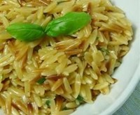

Orzo with Parmesan and Basil
Allrecipes
Ingredients
-
-
2
tablespoons butter
-
1
cup uncooked orzo pasta
-
1
(14.5 ounce) can chicken broth
-
1/2
cup grated Parmesan cheese
-
1/4
cup chopped fresh basil
-
salt and pepper to taste
-
2
tablespoons chopped fresh basil
Instructions
-
-
Melt butter in heavy skillet over medium-high heat. Stir in orzo and saute until lightly browned.
-
Stir in chicken stock and bring to boil. Cover. Reduce heat and simmer until orzo is tender and liquid is absorbed, about 15 - 20 minutes.
-
Mix in Parmesan cheese and basil. Season with salt and pepper. Transfer to shallow bowl. Garnish with basil sprigs.
Notes